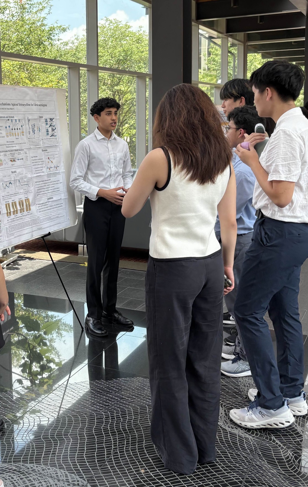

Dev Patel
The University of North Carolina at Chapel Hill

About Me
I never expected that learning about a metabolic process would lead me to the astonishing concept of gene therapy.
“Ethanol metabolism is a zero-order process, catalyzed at a constant rate by enzymes within our bodies.”
As my AP Chemistry teacher explained this zero-order reaction while we studied kinetics, an ordinary day during sophomore year of high school suddenly initiated my odyssey to answer a burning question: Can the enzymes that metabolize ethanol be optimized to reduce the development of alcohol use disorder?
With my curiosity piqued, I began learning about the specific enzymes catalyzing the two-step process of ethanol metabolism, finding that their performance depends on the genes that encode them. Consequently, I delved into further readings identifying point mutations within these genes that can lead to optimal amino acid substitutions within the enzymes. This identification of optimal mutations eventually led me to discover the coveted answer to my question: CRISPR-Cas9, a gene therapy technology that can precisely correct mutations within genes. Marvelled by this result, I packaged this journey of discovery into a literature review proposing the potential for CRISPR-Cas9 to reduce the development of alcohol use disorder.
By writing this literature review, I realized that learning the process of identifying mutations and their respective effects is essential to the design of gene therapy technologies. As a result, I developed an eagerness to understand the genetic origins of other pathogenic issues beyond just theory. I seized an opportunity to pursue this desire when I was selected to conduct bacterial genomics research at the Summer Science Program hosted at Lehigh University. Immediately, I was exposed to the alarming trend of bacterial antibiotic resistance outpacing the discovery of novel antibiotics, which is responsible millions of deaths per year worldwide. To address this issue, I investigated how Vibrio natriegen bacteria develop resistance to the antibiotic tetracycline. By performing PCR, bacterial transformations, DNA extraction, and genome analysis, I identified specific mutations in certain genes that supported the predictability of certain resistance mechanisms, particularly those involving optimized efflux pumps.
I now attend the University of North Carolina at Chapel Hill with a prospective major in Biomedical Engineering. Within my major, I intend to specialize in pharmacoengineering, where I can further my knowledge of gene therapy by learning about its various delivery mechanisms, especially Adeno-Associated Viral Vectors (AAV). I plan on applying this knowledge at one of the many labs at the Center of Molecular Medicine, where groundbreaking research is being done to understand and optimize AAV viral vector-mediated gene therapy. By contributing to this work as a student researcher, I will prepare myself for a career focusing on transforming gene therapy into a viable clinical treatment.

“The virtues of science are skepticism and independence of thought.” - Walter Gilbert

I present my antibiotic resistance research in front of Lehigh University faculty and students at the Summer Science Program. July 2025.